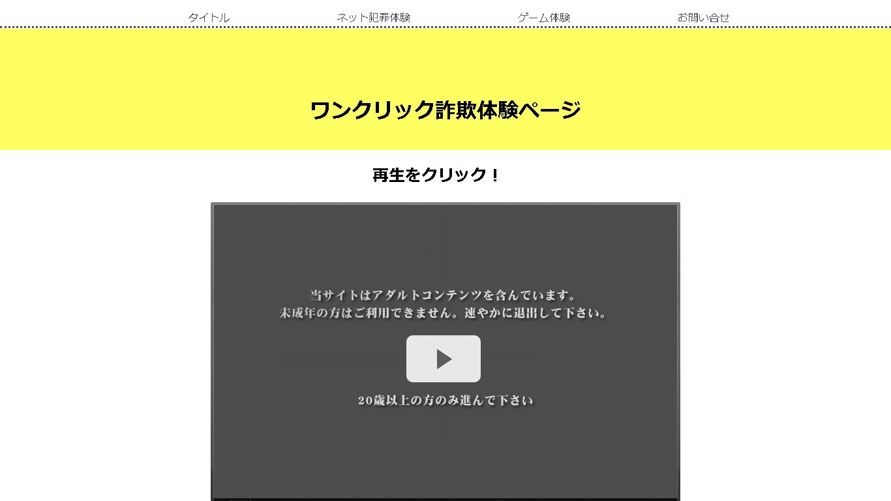
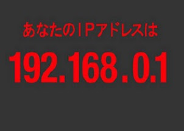
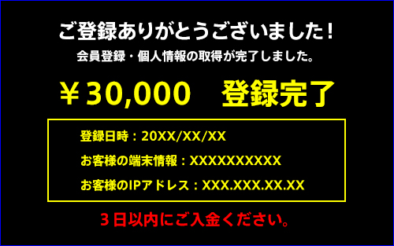

ワンクリック詐欺解説ページ
ワンクリック詐欺 解説

| ワンクリック詐欺とは |
|---|
ワンクリック詐欺はインターネット犯罪のなかでも最も多いネット犯罪です。
ワンクリック詐欺では無料のアダルト動画サイトなどに見せかけてクリックさせたあとに、住所情報取得中の画面、IPアドレス、ブラウザの情報などを表示して個人を特定しているように見せかけて恐怖心をあおりお金をだまし取ります。
下の画像のようにIPアドレスや端末情報が表示されます。
スマートフォン用に改良されシャッター音がなるタイプもあります。
よくワンクリック詐欺では情報から個人を特定できますとありますが、嘘です。
住所情報取得中の画面も偽物であり、アクセスしただけで住所情報、電話番号、メールアドレスが取得されることは絶対にありません。また、シャッター音がなり画像を送るような画面が表示されても音が鳴っただけで実際に撮影されたり、画像が送信されたりはされていません。
高額な料金や期日のなさに焦って電話をしてしまうと、脅迫をされたり、その時に使用した電話番号やメールアドレスが悪用されてしまいます。
こちらから連絡を取るなどの行動を起こさない限りは相手から連絡を取ってくることはありませんし、料金を請求されることもありません。
ワンクリック詐欺にあってしまった際に重要なのはこちらからはなにもせずただ無視をすることです。
ワンクリック詐欺の種類によってはウイルスをダウンロードさせて料金請求画面を表示させるものもありますが、それも無視して大丈夫です。これらのウイルスから個人を特定することはできません。
ただし、画面が簡単に消えない場合もあるので不用意にダウンロードすることはやめましょう
ワンクリック詐欺では無料のアダルト動画サイトなどに見せかけてクリックさせたあとに、住所情報取得中の画面、IPアドレス、ブラウザの情報などを表示して個人を特定しているように見せかけて恐怖心をあおりお金をだまし取ります。
下の画像のようにIPアドレスや端末情報が表示されます。
スマートフォン用に改良されシャッター音がなるタイプもあります。


| 対策方法 |
|---|
住所情報取得中の画面も偽物であり、アクセスしただけで住所情報、電話番号、メールアドレスが取得されることは絶対にありません。また、シャッター音がなり画像を送るような画面が表示されても音が鳴っただけで実際に撮影されたり、画像が送信されたりはされていません。
高額な料金や期日のなさに焦って電話をしてしまうと、脅迫をされたり、その時に使用した電話番号やメールアドレスが悪用されてしまいます。
こちらから連絡を取るなどの行動を起こさない限りは相手から連絡を取ってくることはありませんし、料金を請求されることもありません。
ワンクリック詐欺にあってしまった際に重要なのはこちらからはなにもせずただ無視をすることです。
| 補足 |
|---|
ただし、画面が簡単に消えない場合もあるので不用意にダウンロードすることはやめましょう